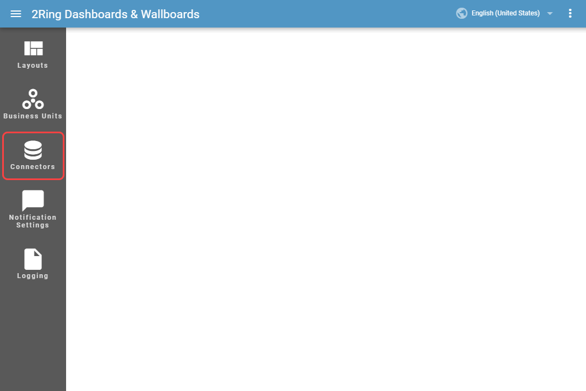
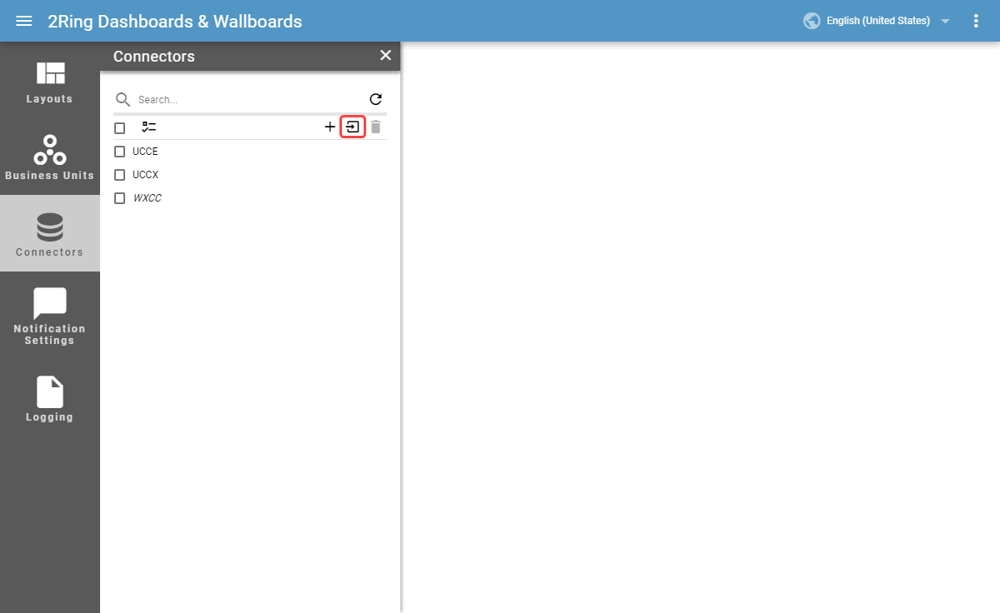
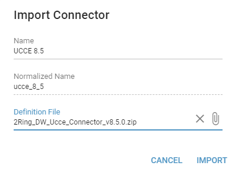
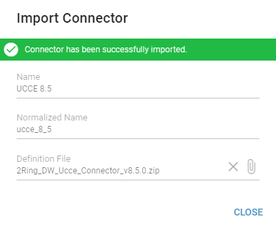
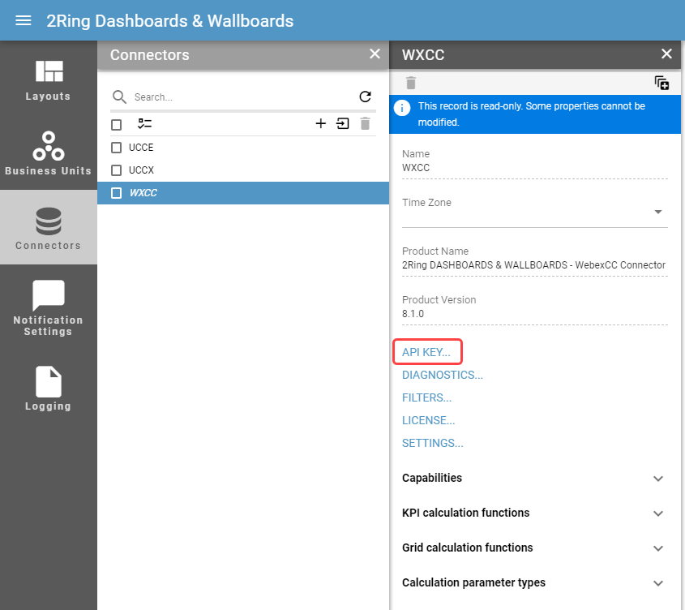
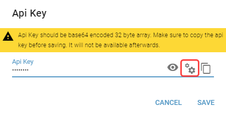
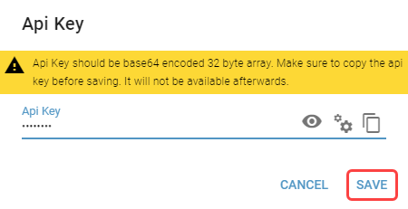
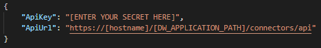

Installation¶
Before the installation, make sure the connector version is compatible with the DW version. DW and its connectors are considered to be compatible, when both minor and major version numbers match.
Example:
- DW 8.0.1 is compatible with connector 8.0.3
- DW 8.1.0 is NOT compatible with connector 8.0.3
- DW 8.0.1 is NOT compatible with connector 8.1.0
Installation Steps¶
In the Administration Application, select CONNECTORS in the drawer menu.
Figure 1: Connectors button
Click on IMPORT button located in the toolbar of connectors list.
Figure 2: Import button
In the import dialog, enter a unique connector name. A Normalized Name is a read-only field, defining the name that will be used for connector tables. It is automatically generated from the name of the connector by replacing all characters except the alphanumerical with an underscore. A Normalized Name has to be unique. Click on the “definition file” field, locate the connector’s manifest package and click IMPORT.
The name of the connector can not be changed after the installation.
Figure 3: Import dialog
After the connector is successfully installed, notification banner is displayed.
Figure 4: Install

Api Key
In order to ensure successful communication between a Connector Windows service and DW application, please follow these steps:
Navigate to the Connectors tab, choose the desired connector and click on Api Key.
Figure 5: Api Key button
User can generate the Api Key by clicking on generate button in the Api Key dialog or set Api Key used in another connector.
Connectors have to share the same Api Key.
Figure 6: Generate button
After setting a desired Api Key, clicking on SAVE closes the dialog and saves the Api key.
Make sure to copy the Api Key before saving. It will not be available afterwards.
Figure 7: Save button

Entering Api Key and Api Url into appsettings.json
Manual entering of the ApiKey and ApiUrl is required. Locate the appsettings.json file in the DW deploy folder -> services -> connector_host and open in any text editor.
It is necessarry to enter an encrypted ApiKey into appsettings.json. For instructions how to encrypt the ApiKey, see Encrypt Api Key chapter.
Figure 9: appsettings.json
[ENTERT YOUR SECRET HERE] placeholder
Api Key which user generated and saved in the DW Administration Tool.
[HOSTNAME] placeholder
IP address or hostname of server where 2Ring DW is deployed.
[DW_APPLICATION_PATH] placeholder
Virtual path for DW in IIS. This is configured during the installation of the DW (see Installation chapter). By default, the application path is 2ring/dw
Changing settings in the appsettings.json file requires the service to be restarted.